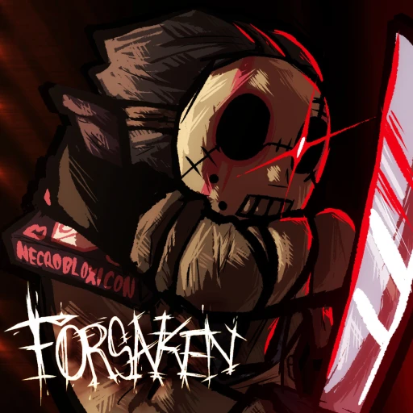

Forsaken
ВЫЖИВШИЕ
выжившие-это персонажи на которых ты играешь почти всегда
список выживших
- шедлетский-этот персонаж может и станать убийцу и хилиться
- нуб-он может стать каменным (и по нему не будет наносится урон)
стать невидимым (хотя его все равно видно правдо хуже
и стать быстрым на 10 сек(ускорение 2 степени)
- эллиот-может давать пиццу другим игрокам (сам хавать не может)
и ускорятся степени 3 на 5 секунд (чтобы получить надо похилить игрока
- ту тайм (или же две жизни)- может 1 раз поставить возрождалку
что бы получить вторую жизнь надо либо ударить убийцу два раза зади
либо три раза спереди
- гость 1337-довольно сложный персонаж у него есть 3 способности расскажу про две 1-блок
если вы юзнете это способность и в вас ударил убийца то у вас появится вторая способность
2-если вы попадете этой способностью по убийце то убийца оглушется
- строитель-может строить пушку которая наносит убийце урон и замедляет его
и хилку которая хилит всех даже самого строителя
- 007n7-он может делать клона и становится невидемым как и нуб и телепортироватся
- таф-может расставлять ловушки а точнее мины и веревки
- дуссекар-может делать шит над выжиышими на 10 сек и тем над которыми щит им убийца сносит меньше хп
- шанс- он самый странный выживший он может стрелять из пистолета (в себя в убийцу или вообще не стрельнуть
и сделать себе либо меньше хп либо больше
- вероника-выйдет завтра:)